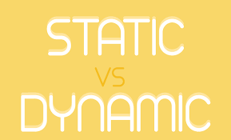
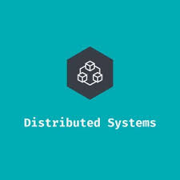
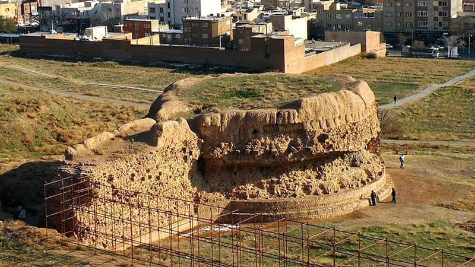

بسم الله الرحمن الرحیم
تقدیم به زبیده خاتون که بوعلی بزرگ به پائین پای او دفن شد تا مورد شفاعت سلطان طوس باشه
تیم ما


زهرا فامیلستاری
الهام افشار
معصومه هاشمی
مینا یعقوبیکیا
مهدی تعالی
محمد حسین اتفاقیان
امیر حسین سیف
سید مهدی حسینی
احسان عاکفی
محمدجواد محمدی
امیرحسین معیاری
امیرحسین باباییان
سید امیرمسعود حسینی
مسئله چیست
۱ + ۴ راه حل نوین برای آینده برنامه نویسی
توصیف محور کردن دریافت دادهها
 گرافکیوال (GraphQL)
گرافکیوال (GraphQL)
لايهای بین رابطهای سمت کاربر و منطق بکاند
با تمرکز روی توصیف دادهها
با تمرکز روی توصیف دادهها


مشکلات GraphQL
- نبود Type Safty
- اضافه شدن gql به هر دو طرف سرور و کلاینت
- تغییر مفاهیم استاندارد و تعریف مفاهیم جدید
- امکان ایجاد دورهای بینهاتِ، فراوان در دریافت دادهها
- وابستگی و تعریف ویژگیها بر مبنای SQL
 ۲. مدیریت رابطه ها
۲. مدیریت رابطه ها
حذف جداول و روابط بین داده ها که پیچیدگی دریافت، ارائه و تحلیل محتوا می شود.
شعارها
GraphQL : هر چی میخواید با یک درخواست از سرور بگیرید
ما : هر چی میخواید با یک درخواست از سرور و همچنین یک درخواست از دیتابیس بگیرید

۳. ایجاد محتوای ایستا و قابل فهم
محتوای درست در فضای سایبر محتواییست که به سرعت قابل دسترس و به غایت قابل فهم برای موتور های جستجو باشد.

۴. توزیع پذیری
منابع محدود سخت افزاری، درخواست های مکرر دریافت محتوا و مقیاس بیش از اندازه داده ها به ناچار همه برنامه های سمت
سرور را به سوی شکسته شدن منطق و داده به قسمت های کوچک تر می برد.
توسعه و ساخت برنامه های جدید و حتی حدس نیاز های دنیای آینده با هوش مصنوعی و الگوریتم های یادگیری ماشین رخ می
دهد.

فضل
تسهیل گر تمدن ما با زبان امروز و آینده بشر